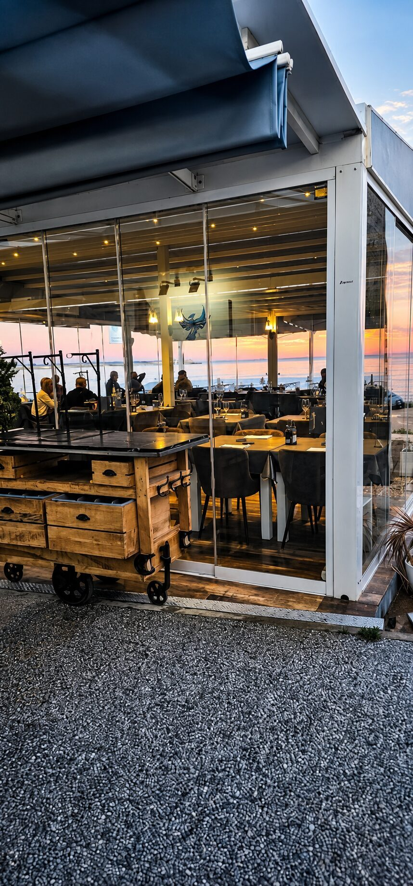

Une brasserie franco-belge bistronomique posée face à la Méditerranée : viandes grillées à votre table sur pierre de lave, fruits de mer, Pâtes Maison et un Menu Dégustation en 5 temps. Terrasse vitrée avec vue sur la mer et couchers de soleil.

L'esprit Phoenix
Comme l'oiseau qui lui donne son nom, la Brasserie Phoenix est née du feu. Grillades sur pierre de lave, viandes flambées à la potence : ici, la flamme n'est pas un décor, c'est notre langage.
Face à la Méditerranée de Torrevieja, nous marions la générosité du Sud à l'élégance d'une vraie brasserie : produits de la mer du jour, pâtes fraîches maison, viandes d'exception sélectionnées avec soin.
Chaque service est une renaissance : celle d'un lieu où l'on prend le temps, où le feu réunit et où chaque assiette raconte la mer et la braise.
Nos plats signature
Entrecôte de bœuf GalicienGrillée à votre table sur pierre de lave brûlante, servie avec sa sélection de sauces et une salade fraîche.
35,90 €Bœuf Black AngusPièce d'exception, grillée sur pierre de lave. Prix du jour selon l'arrivage.
Prix du jourBrochette de scampisFlambées en salle à la potence — le spectacle du feu à votre table. 2 pers. minimum, prix par personne.
33,90 €Menu Dégustation — 37,50 €
Servi en 5 temps · Cinq temps · cuisine bistronomique
I. Salade fraîcheurPamplemousse, câpres, olives noires & croûtons
II. Saint-Jacques snackéesÉcrasé de pommes de terre, réduction de Tripel Karmeliet
III. Demi foie gras poêléPain brioché & confiture de piments
IV. Plat au choixBar entier grillé (Frites & légumes grillés) ou Demi-magret de canard (Potatoes & légumes grillés)
V. Poire pochée au vin rougeBoule de glace vanille
La carte
Nos Entrées
Saint-Jacques snackées Triple Karmeliet◆ Coup de cœurSaint-Jacques fraîches, sauce Triple Karmeliet, accompagnement du jour
18,90 €Carpaccio de bœuf à l'italienneBœuf argentin, pesto pistache, tomates séchées, billes de mozzarella, roquette, vinaigre balsamique
21,90 €Œuf Parfait 64° façon carbonaraCrème légère, lardons croustillants, parmesan, pecorino
13,90 €Camembert rôti & charcuterieCamembert, thym, miel, charcuterie
14,90 €Chips de crevettes (Quisquillas)Servies avec une sauce aïoli maison
19,90 €Carpaccio de GambasHuile d'olive, zeste de citron et orange, sel noir, poivre
18,90 €Tomate burrata & pesto de pistacheTomates, burrata, pesto de pistache, roquette, vinaigre balsamique
12,10 €Poêlée de supions au chorizoSupions poêlés, chorizo
12,90 €Melon, jambon cru et portoMelon de saison, jambon serrano et porto
10,90 €Huîtres◆ Coup de cœur4 huîtres, vinaigre aux échalotes, yuzu — coupe de cava +3€
12,00 €Nos Salades
Salade Levante◆ Coup de cœurTataki de thon rouge, orange sanguine, fenouil croquant, olives Taggiasche, tomate, oignon
16,90 €Salade de la mer◆ Coup de cœurGambas, avocat, mangue, coriandre fraîche, vinaigrette yuzu
17,90 €Salade César façon Phoenix◆ Coup de cœurPoulet rôti, anchois, parmesan, croûtons, sauce césar
14,90 €Salade grecqueSalade, tomate, oignon, concombre, feta
11,90 €Salade chèvre-miel (toast chaud)Rondelle de chèvre chaud, miel, salade croquante
12,90 €Nos Plats
Tartare de bœuf préparé minuteBœuf coupé au couteau, frites, salade
18,90 €Seiche à la plancha, légumes & fritesSeiche, poêlée de légumes, frites
22,90 €Espadon ou Thon grillé, chimichurriSauce chimichurri, accompagnement du jour — Thon +4€
26,90 €Burger italienBœuf, mozzarella, tomates séchées, pesto de pistache, roquette, pain brioché
21,20 €Brochettes de scampis sauce PhoenixBrochette de scampis, accompagnement du jour
22,90 €Suprême de volaille à la truffe◆ Coup de cœurFilet de volaille, écrasé de pomme de terre, sauce crémeuse à la truffe
24,90 €Nos Viandes sur Pierre
Servies avec salade, une sauce maison et un accompagnement.
Entrecôte de bœuf GalicienEspagne
35,90 €Filet de bœuf GalicienEspagne
40,90 €Plateau mixteFilet pur de bœuf, filet pur de porc, filet de poulet
28,90 €Sélection de viande en suggestion
21,90 €Filet pur de porc DurocEspagne
20,90 €Filet de volaille jauneEspagne
20,90 €Entrecôte de bœuf ArgentinArgentine
38,90 €Filet de bœuf Belge◆ Coup de cœurBelgique
39,90 €Bœuf Black AngusIrlande
Prix du jourBrochette de scampis2 pers. minimum — prix par personne
33,90 €Ramen du jour◆ Coup de cœur2 pers. minimum — prix par personne. Choix entre porc Duroc, volaille jaune, bœuf Belge, bœuf Galicien
Prix du jourNos Pâtes
Carbonara◆ Coup de cœurPecorino, parmesan, Guanciale
12,90 €Saumon & anethSaumon, sauce crème aneth
14,90 €PolpetteSauce tomate, olives, boulettes de viande, parmesan
13,90 €Chorizo, sobrasada & chips jambon cruIdentité ibérique affirmée
13,90 €Pesto de pistachePesto maison pistache, burrata +2,50 €
12,90 €ScampisSauce au choix : Phoenix, poivre vert, champignon, roquefort, curry rouge coco, chimichurri. Sauce crème truffe +2€
17,90 €Nos Plats enfants
Burger enfant & frites
12,00 €Pâtes jambon fromage
12,00 €Pâtes bolognaise enfant
12,00 €Nos Desserts
Crème brûlée au Grand Marnier◆ Coup de cœurCrème brûlée maison flambée au Grand Marnier
9,90 €Dame blancheBoules de glace vanille, chocolat Callebaut et chantilly
9,90 €Poire au vinPoire, boule de glace, chantilly
8,90 €Café gourmandCafé au choix et assortiment de pâtisseries
8,90 €Tarte aux fruits & glace vanilleTarte aux fruits maison, glace vanille, chantilly
9,90 €ColonelSorbet citron, vodka
7,90 €BrésilienneGlace vanille et moka, caramel, noisettes caramélisées, chantilly
9,90 €Tiramisu du jour◆ Coup de cœurNotre tiramisu change au fil des saisons
9,90 €Cava gourmandCava au choix et assortiment de pâtisseries
11,90 €Plateau de fromagesServi avec du pain et une confiture
Prix du jourDigestif gourmandCafé au choix et assortiment de pâtisseries
8,90 €Tartelette aux pommesTarte aux pommes, boule de glace, chantilly
12,90 €Horaires
Salle : jeudi à mardi, midi et soir (soirée spéciale DJ Kavari le mardi) · Chiringuito : 7j/7
Brasserie (bar & salle)
Jeudi – Mardi11:00 – 00:00
Mardi soir · spécial DJ Kavari18:00 – 00:00
MercrediFermé
Cuisine (service des plats)
Déjeuner12:00 – 15:00
Dîner18:00 – 22:00
Chiringuito / terrasse
7j/711:00 – 01:00
Adresse et accès
Brasserie Phoenix
Av. Desiderio Rodríguez, 37, local 10, 03185 Torrevieja, Alicante, Espagne
+34 744 62 29 75 · brasseriephoenixrestaurant@gmail.com
Itinéraire Google Maps
Questions fréquentes
Où se trouve la Brasserie Phoenix ?
Av. Desiderio Rodríguez 37, local 10, 03185 Torrevieja (Alicante, Espagne), en bord de mer, avec une terrasse vitrée face à la Méditerranée.
Quels sont les horaires ?
Du jeudi au mardi, midi et soir ; fermé le mercredi. Cuisine de 12 h à 15 h et de 18 h à 22 h ; bar et salle de 11 h à minuit.
Quel type de cuisine ?
Une cuisine franco-belge bistronomique : viandes grillées sur pierre de lave (bœuf galicien, argentin, belge, porc Duroc), fruits de mer, poissons, Pâtes Maison et desserts maison.
Y a-t-il un menu dégustation ?
Oui : le Menu Dégustation en 5 temps à 37,50 € (Saint-Jacques snackées à la Tripel Karmeliet, demi foie gras poêlé, salade fraîcheur, bar entier ou demi magret, poire au vin), avec accords vins en 3 ou 5 verres.
Comment réserver ?
Par téléphone ou WhatsApp au +34 744 62 29 75, ou depuis notre site.
Y a-t-il un menu enfant ?
Oui, des plats enfants à 12 € (burger, nuggets, pâtes).
Que se passe-t-il le mardi soir ?
Soirée spéciale avec DJ Kavari, avec la carte complète.